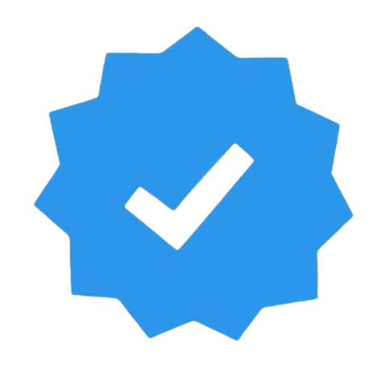
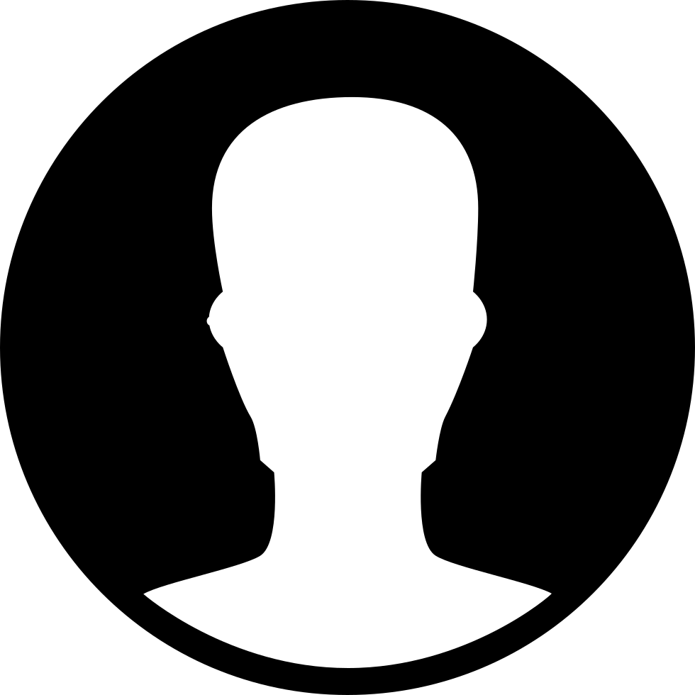
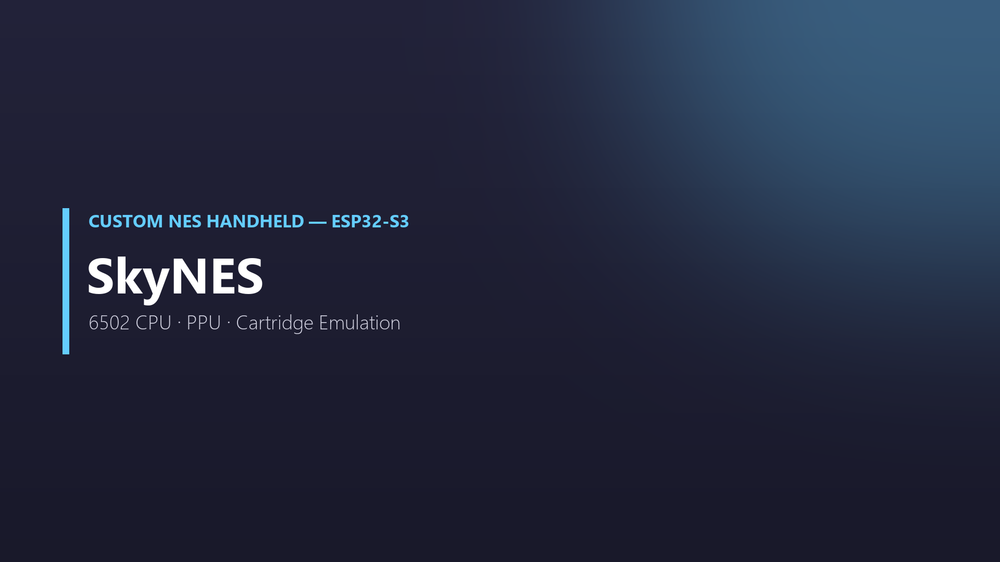
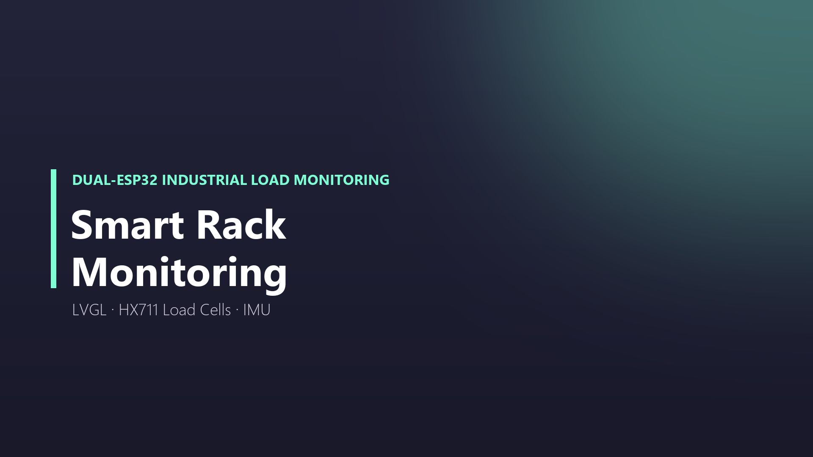
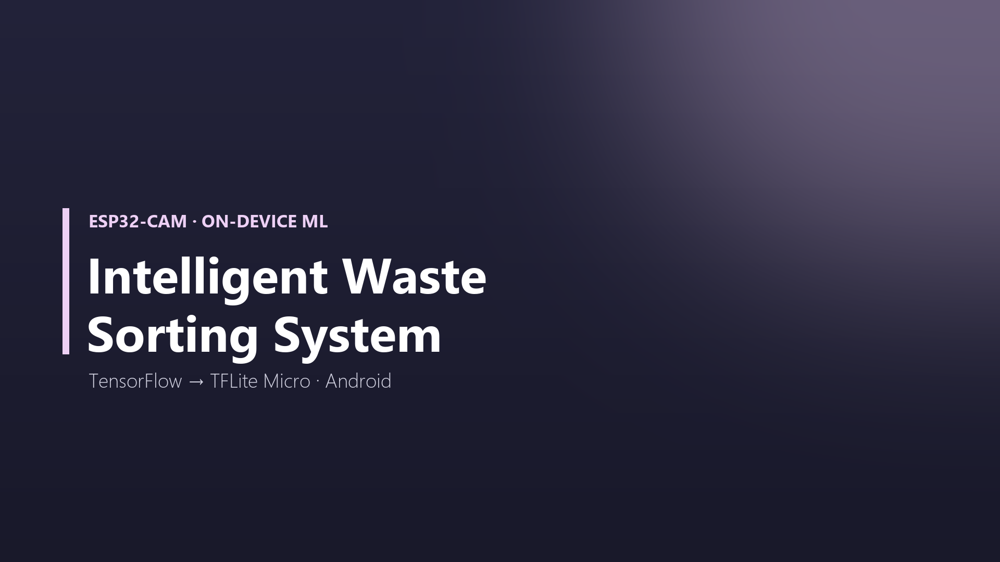
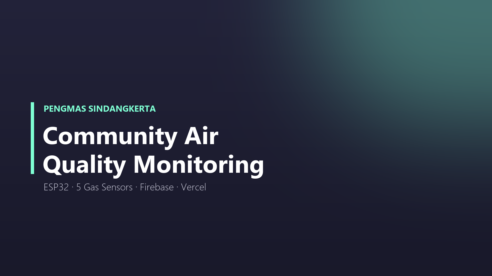
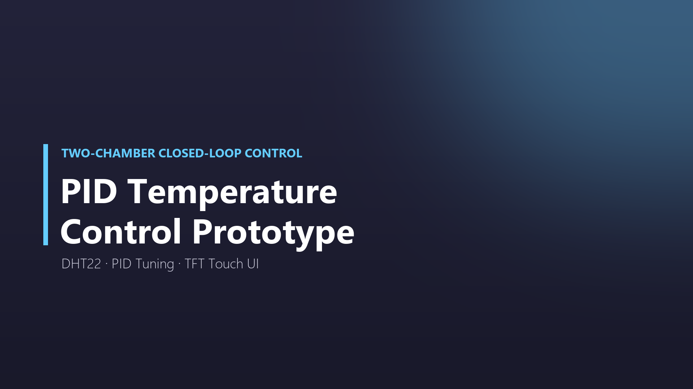
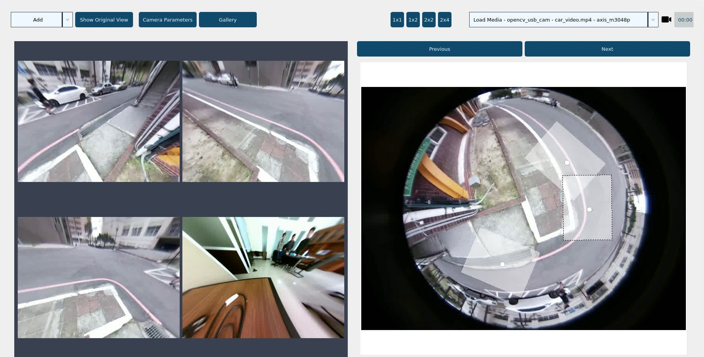
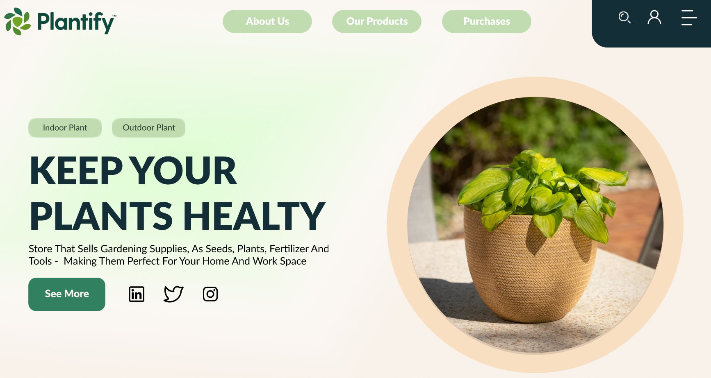

Hi, I'm
Hi, I'm
A closer look at my background and how I work.
Final-year Electrical Engineering student at Telkom University, working primarily as a software engineer in Python and C/C++ across computer vision, embedded systems, and web-connected IoT — with hands-on experience integrating that software with real hardware and sensors. I've delivered a production machine-learning project and a full-stack asset-management platform for PT Kereta Api Indonesia, and completed a research internship at BRIN.
Languages
Python, C, C++, JavaScript, HTML/CSS, MATLAB
Software Development
Computer vision (OpenCV), machine learning (TensorFlow/TFLite Micro), FastAPI, WebSocket, REST APIs, Firebase, Android Studio
Embedded & IoT
ESP32/ESP32-S3, Arduino/PlatformIO, PID closed-loop control, LVGL, sensor and actuator integration
B.Eng., Electrical Engineering
Telkom University, Bandung
GPA 3.77/4.00 · Expected Sep 2027
Math-Scientific High School Graduate
Public Senior High School 1 Denpasar, Bali
2020-2023
Division Coordinator, Assignment & Task Committee
Basic Computing & IRIS Laboratories, Telkom University
Authors programming problems, test cases, and grading rubrics each semester
Academic Track Lead
DLOR 2025 Assistant Recruitment
Selected and onboarded new laboratory assistants
Indonesian (native) and English (professional working proficiency, EPRT score 542). Currently studying Mandarin and Japanese 「日本語」.
Roles and responsibilities I've taken on across industry, research, and academia.
PT KAI (Kereta Api Indonesia) — Track & Bridge Division
Jul 2026 - Present

Architecting and building a full-stack asset-management platform for PT KAI's Track & Bridge division end to end, designed to catalog 103 equipment types across 254 work units in 13 regions nationwide. Implemented the FastAPI backend's WebSocket live-update layer, JWT authentication and rate limiting, and response compression — in a team of two.
LumiaTech Innovations Research Laboratory, Telkom University
Feb 2024 - Present

Delivered a railway-track anomaly detection system for PT Kereta Api Indonesia, applying OpenCV image segmentation to trackside video to flag defects along the rail corridor — completed and accepted in a team of three. Also built a multi-view reconstruction module recovering multiple usable viewpoints from a single monocular fisheye camera.
BRIN (National Research and Innovation Agency), KST Samaun Samadikun
Jul 2025 - Sep 2025
Built the data collection and processing pipeline for an autonomous vehicle research platform, capturing and synchronising multi-sensor data (LiDAR, IMU, GPS) across multiple recording runs on ROS 2. Set up a physics-based simulation environment in NVIDIA Isaac Sim so the team could test control software without on-track vehicle time.
Basic Computing Laboratory (C) and IRIS Laboratory (IoT), Telkom University
Sep 2024 - Present

Author C and IoT programming problems, test cases, and grading rubrics each semester; lead the Assignment and Task Committee, and ran the academic track of DLOR 2025 assistant recruitment. Also taught and assessed Digital Engineering and Calculus I as a Lecturer's Assistant, designing quizzes, examinations, and projects.
A selection of projects spanning embedded systems, computer vision, and full-stack development.







Feel free to reach out — I'm always open to new opportunities and collaboration.